Java Module mit Jigsaw
Wozu brauchen wir Java Jigsaw?
JAR Hell!
Java ist ein Monolith!
Java Anwendungen sind (oftmals) monolithisch!
Java Modules to the Rescue
Reliable Configuration
Compile und Runtimeprüfung dass
- Jede Abhängigkeit erfüllt ist
- Keine Zyklen auftreten (Ausnahme Automatic Modules)
- Keine Mehrdeutigkeit zwischen Modulen vorhanden ist
Strong Encapsulation
- public greift nur innerhalb des Moduls
- Das Package muss explizit exportiert werden
- Sogar Reflection funktioniert nicht!
High cohesion, low coupling
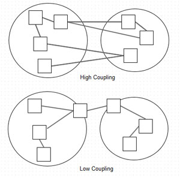Module definieren
"A module is a named, self-describing collection of code and data". Its code is organized as a set of packages containing types, i.e., Java classes and interfaces; its data includes resources and other kinds of static information.
-- Mark Reinhold
Das dümmste anzunehmende Modul
module com.foo.bar { }
Abhängigkeiten definieren
module com.foo.bar {
requires org.baz.qux;
}
Exports definieren
module com.foo.bar {
requires org.baz.qux;
exports com.foo.bar.alpha;
exports com.foo.bar.beta;
}
module-info.java
Liegt per Konvention im Root von src
module-info.java
com/foo/bar/alpha/AlphaFactory.java
com/foo/bar/beta/Beta.java
Module sind 1st class components!
- Module
- Packages
- Klassen / Interfaces
Exkurs: Java SE Module
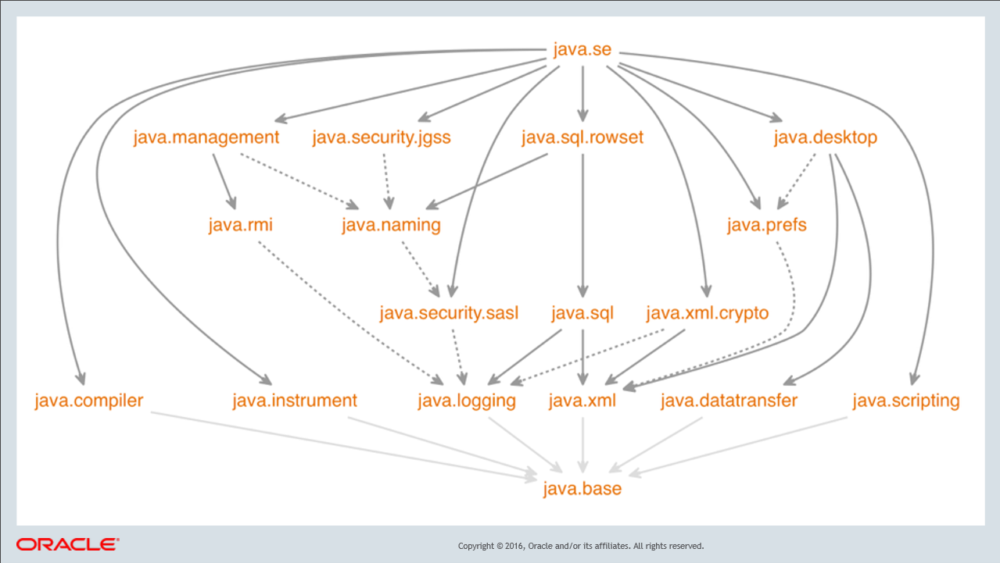Wo ist denn sun.* geblieben?
- Zugriff auf interne API ist möglich, aber von abgeraten
- Modul
jdk.unsupporteddient derweil als Workaround - JDK Team ist um eine supportete Variante bemüht
Module verwenden
Auflösung der Abhängigkeiten
module com.foo.app {
requires com.foo.bar;
requires java.sql;
}
module java.sql {
requires java.logging;
requires java.xml;
exports java.sql;
exports javax.sql;
exports javax.transaction.xa;
}
Auflösung der Abhängigkeiten
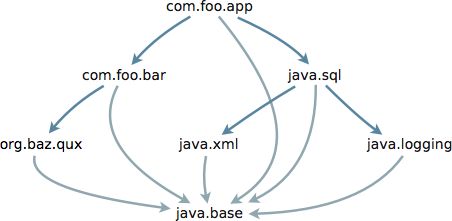Zugriff auf Abhängigkeiten
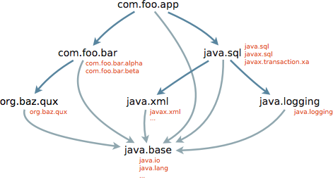Transitive Abhängigkeiten
- java.sql.Driver
public Logger getParentLogger();
String url = ...;
Properties props = ...;
Driver d = DriverManager.getDriver(url);
Connection c = d.connect(url, props);
d.getParentLogger().info("Connection acquired");
Transitive Abhängigkeiten
module java.sql {
requires transitive java.logging;
requires transitive java.xml;
exports java.sql;
exports javax.sql;
exports javax.transaction.xa;
}
Transitive Abhängigkeiten
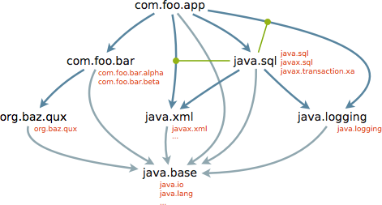Optionale Abhängigkeiten
Optional zur Laufzeit, Obligatorisch zum Kompilieren
module com.foo.app {
requires com.foo.bar;
requires static java.sql;
}
classpath vs. module path
- classpath:
- Flach, d.h. nicht hierarchisch organisiert
- Unterscheidung per JAR nicht mehr möglich
- module path:
- Hierarchisch organisiert
- Zuordnung zu modularen JARs bleibt erhalten
Jigsaw und Services
Bis Java 8
- ServiceLoader
- META-INF/services
- Dynamic binding
Bis Java 8
Beispiel java.sql.Driver
- Implementierung z.B.
com.mysql.jdbc - META-INF/services/com.mysql.jdbc:
com.mysql.jdbc.Driver
Ab Java 9
module java.sql {
requires public java.logging;
requires public java.xml;
exports java.sql;
exports javax.sql;
exports javax.transaction.xa;
uses java.sql.Driver;
}
Ab Java 9
module com.mysql.jdbc {
requires java.sql;
requires org.slf4j;
exports com.mysql.jdbc;
provides java.sql.Driver with com.mysql.jdbc.Driver;
}
Ab Java 9
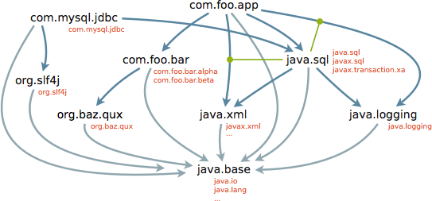Der Migrationspfad
Migration wird ermöglicht durch
- Unnamed Modules
- Automatic Modules
Unnamed Module
- beinhaltet alle JARs im Klassenpfad
- hat keinen Namen (d'oh)
- hat Lesezugriff auf alle Module
- Exportiert alle Packages
Unnamed Module
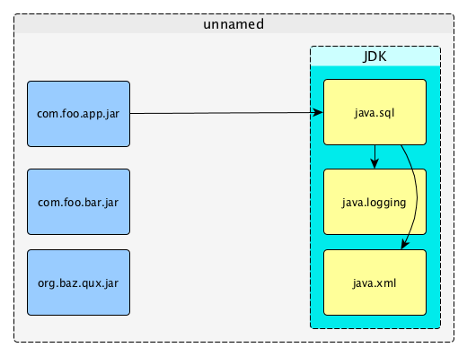Unnamed Module
module com.foo.app {
requires unnamed;
}
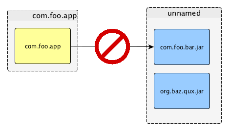
Automatic Module
Jedes JAR wird automagisch zu einem Modul
- Modulname ergibt sich aus Präfix des Dateinamens ohne Version
- Bindestriche werden durch einen Punkt ersetzt
- z.B. ergibt
guava-21.jar==guava - oder
commons-io-1.3.2.jar==commons.io
Class Path oder Module Path?
| Class Path | Module Path | |
|---|---|---|
Regular JAR | Unnamed Module | Automatic Module |
Modular JAR | Unnamed Module | Named Module |
Bottom-Up Migration
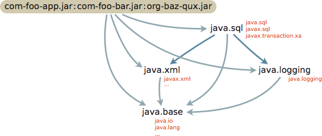Bottom-Up Migration
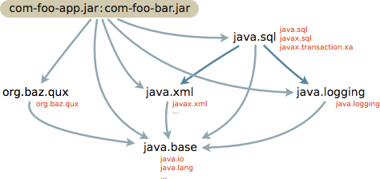Bottom-Up Migration

Top-Down Migration
Der Bottom-up Ansatz ist nicht immer möglich!
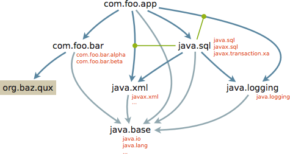Top-Down Migration
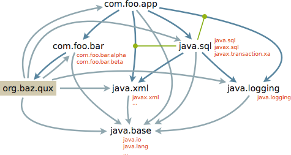Top-Down Migration
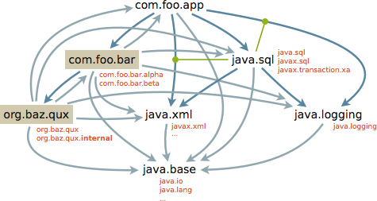Top-Down Migration
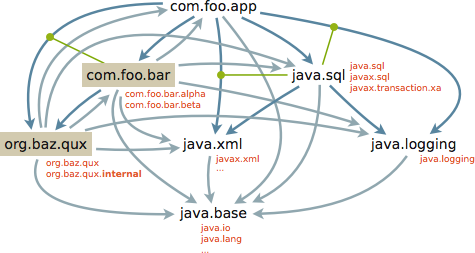Hands on!
Jigsaw vs. OSGi
| Jigsaw | OSGi | |
|---|---|---|
Versioning | not at all | packages and modules |
Runtime Behavior | mostly static | dynamic |
Services | declarative via | declarative or programmatically; |
Class Loaders | operates below | one per bundle |